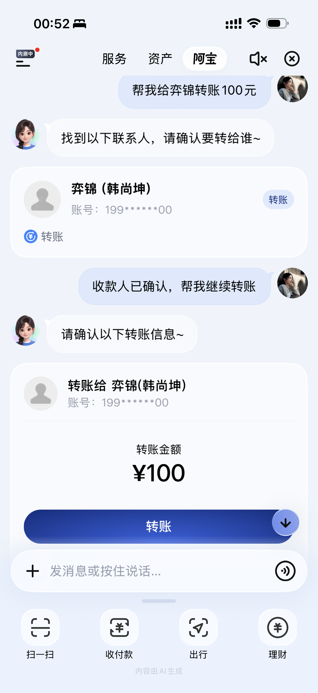

阿宝 AI 转账 · 从自然语言到真实资金结果
作为转账场景负责人，我主导能力范围、端到端用户动线、对客交互与转账域能力设计。用户可以用自然语言完成信息补全、找人确认、支付和结果反馈；同时围绕收款人、金额、用户授权与真实交易状态设计风险及异常处理。
对话式交互

简化用户旅程
- 01说出需求自然语言
- 02补全信息收款人 · 金额
- 03确认收款人身份核验
- 04确认转账收款人 · 金额
- 05授权支付安全验证
- 06获得结果真实资金状态
工作经历 · 2024.07—至今
校招加入蚂蚁，两年内先后负责支付与资金类核心产品，覆盖支付解决方案、个人转账、收银台等千万级产品建设，并推动 AI 在支付链路融合落地。
作为转账场景负责人，我主导能力范围、端到端用户动线、对客交互与转账域能力设计。用户可以用自然语言完成信息补全、找人确认、支付和结果反馈；同时围绕收款人、金额、用户授权与真实交易状态设计风险及异常处理。
对话式交互

简化用户旅程
牵头收单、收银、支付决策、智能终端、核身与外部厂商完成复杂交易能力建设，0→1 落地手表在线与离线「碰一下」支付，并支持 OPPO 与华为鸿蒙手机间的「碰一下」转账；同时持续治理核心支付链路的耗时与转化漏损。
作为转账产品负责人，承接集团级用户支付体验战役中的转账专项，对人工求助与链路受阻指标负责。我将客服原声、用户行为与业务规则转化为可治理的问题分类，并牵引搜索、安全、账户、账单等团队完善恢复路径与结果反馈。
实习经历
重构商家配送设置与异常履约体验。客诉降低 64%，异常处理响应率提升 10%，订单取消率降低 8%。
推动会中管控功能上线，并优化官网硬件生态页面，缩短 Rooms 硬件采购决策路径。
参与首页瀑布流内容卡片、MCN 达人管理平台及内容安全审核中后台设计。
工作之外
我记录旅行中的特别体验、实用经验和视觉线索，并通过两个自媒体账号持续输出旅行内容。旅行也不断训练我观察人、环境与日常选择的方式。
负责上海交通大学 2022 年本科生录取通知书设计及落地；本科期间从 0 到 1 创立浙江大学学生美妆社，并获得完美日记、万花镜等品牌赞助。
工业设计训练让我从形态、行为与情境理解用户。医疗与游戏设计方向的探索，也持续影响我对同理心、反馈和用户动机的判断。
教育背景
国际工业设计工程硕士 · GPA 3.92/4.0 · 2/39
工业设计专业交换
工业设计本科 · GPA 3.74/4.0 · 保研综排名 3/38